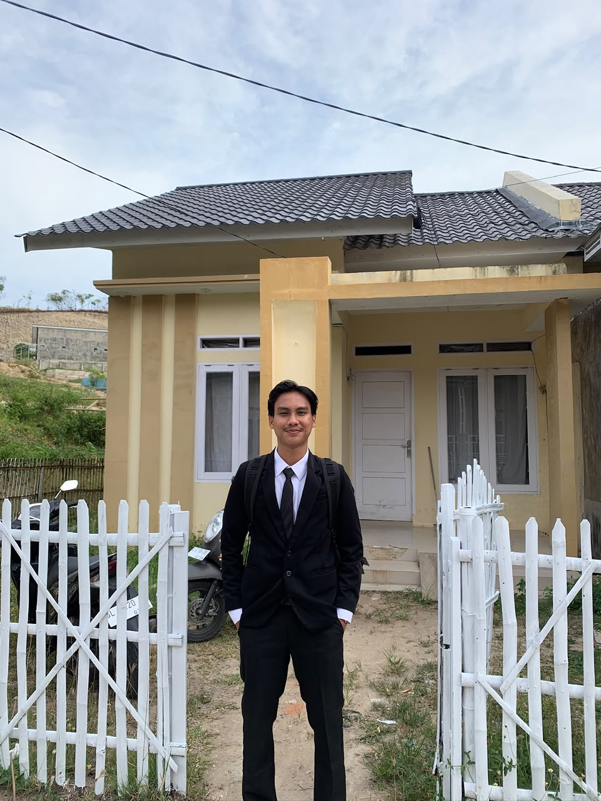

Halo, saya

Tentang Saya
Saya Fachril Akbar, lulusan Teknik Informatika 2026 dari Universitas Malikussaleh, Lhokseumawe, Aceh. Perjalanan akademis saya didorong oleh ketertarikan mendalam terhadap Kecerdasan Buatan, machine learning, dan computer vision — bidang yang saya yakini dapat memberi dampak nyata di kehidupan masyarakat.
Penelitian skripsi saya berfokus pada pembangunan sistem deteksi deepfake menggunakan arsitektur CNN — berhasil meraih akurasi tinggi dalam mengidentifikasi manipulasi wajah digital. Sebagai fresh graduate, saya siap mengaplikasikan keahlian saya secara profesional dan berkembang bersama tim yang solid.
Perjalanan
Rekam jejak pendidikan, penelitian, dan pekerjaan teknis saya.
Universitas Malikussaleh, Lhokseumawe
Mempelajari fundamental ilmu komputer, algoritma, kecerdasan buatan, dan pengembangan perangkat lunak. Aktif terlibat dalam penelitian AI dan pengembangan aplikasi.
Lab Komputer, Unimal
Membangun sistem deteksi deepfake menggunakan Convolutional Neural Networks (CNN) dan teknik computer vision. Berhasil mencapai akurasi tinggi dalam mengidentifikasi manipulasi wajah digital.
Proyek Mandiri
Membangun aplikasi manajemen data mahasiswa berbasis Java dengan fungsionalitas CRUD penuh dan integrasi MySQL. Menerapkan prinsip OOP dan arsitektur MVC terstruktur.
Freelance & Open Source
Aktif mengembangkan proyek web modern dan penelitian AI. Membangun portofolio digital sekaligus memperluas keahlian dalam machine learning terapan dan kontribusi open-source.
Organisasi
Keterlibatan saya dalam organisasi mahasiswa dan komunitas profesional.
Anggota Humas
Aktif menjalin hubungan dengan organisasi internal kampus dan pihak eksternal, termasuk BEM, himpunan, serta PERMIKOMNAS Wilayah I Aceh-Sumatera Utara, sekaligus berkontribusi dalam berbagai kegiatan dan kepanitiaan HIMATIF.
Wakil Ketua Umum
Berperan aktif sebagai Wakil Ketua Umum HIMATIF dalam mengoordinasikan kegiatan dan kebutuhan internal organisasi, serta menjaga komunikasi dengan Program Studi Teknik Informatika. Turut merancang dan melaksanakan kegiatan yang didukung oleh program studi serta mengawal berbagai program kerja himpunan untuk mendukung pengembangan mahasiswa.
Anggota KOMINFO
Berperan aktif sebagai anggota Kominfo BEM Universitas Malikussaleh dalam merancang dan mengembangkan desain untuk kebutuhan publikasi organisasi. Terlibat dalam menyusun konsep dan skema desain, bertukar ide, serta bekerja sama dalam tim untuk menghasilkan desain yang sesuai dengan kebutuhan kegiatan dan publikasi.
Portofolio
Pilihan proyek yang mencerminkan kemampuan dan minat teknis saya.
Sistem bertenaga AI untuk mendeteksi manipulasi wajah digital (deepfake) menggunakan deep learning dan computer vision. Menganalisis gambar dan video untuk memverifikasi keaslian wajah dengan akurasi tinggi menggunakan arsitektur CNN yang dioptimalkan.
Website portofolio profesional dengan estetika dark modern, animasi halus, dan layout responsif penuh di semua perangkat dan ukuran layar.
Teknologi
Bahasa dan teknologi yang aktif saya gunakan dalam proyek-proyek saya.
Kontak
Siap berkolaborasi atau bergabung dengan tim Anda? Mari terhubung dan bangun sesuatu yang bermakna.
Foto 1
← → untuk navigasi · ESC untuk tutup